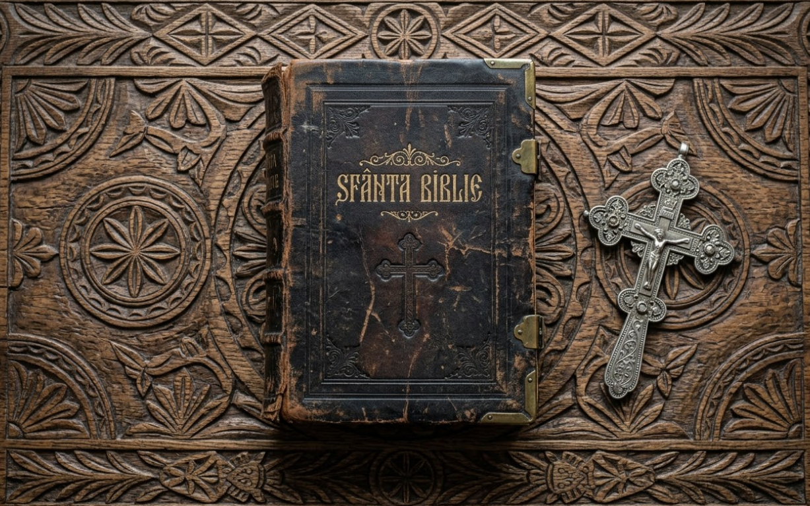

TRADIȚIE • INOVAȚIE • COVURLUI
Digitalizăm sufletul românesc.
contact@ce-ai-ovidiu.online

Atinge Cartea pentru a jura
Pe-un picior de plai,
Pe-o gură de rai,
Iată vin în cale,
Se cobor la vale,
Trei turme de miei,
Cu trei ciobănei.
Pi-un cicioar di plai,
Pi-unã gurã di rai,
Iaca yinu n-cali,
S-dipunu la vali,
Trei turmi di njelji,
Cu trei picurarlji.